Técnica Cut-out
Cut-out digital
O cut-out é uma técnica antiga de animação. No entanto, a utilização das tecnologias digitais trouxe um novo fôlego a esta técnica e permitiu o seu cruzamento e integração com outras técnicas, com elevado destaque para a sua utilização em combinação com técnicas de 3D. A série de animação South Park é um dos exemplos mais populares de cut-out digital (cut-out feito com animação por computador) feito com software de animação 3D.
No exemplo, vamos importar as imagens de uma personagem criada por Célia Rolo. Se quiser utilizar as mesmas images clique aqui.
Utilizar o Blender para cut-out
Ponto prévio: iremos utilizar o motor de renderização Cycles mas o procedimento em Blender Internal Renderer é similar.
1. Comece por ativar o add-on Import Images as Planes para facilitar o processo de importação da personagem. Como esta está dividida em várias partes, cada uma das partes vai ser associada a um plano e o add-on implementa esse processo de uma só vez e automaticamente.
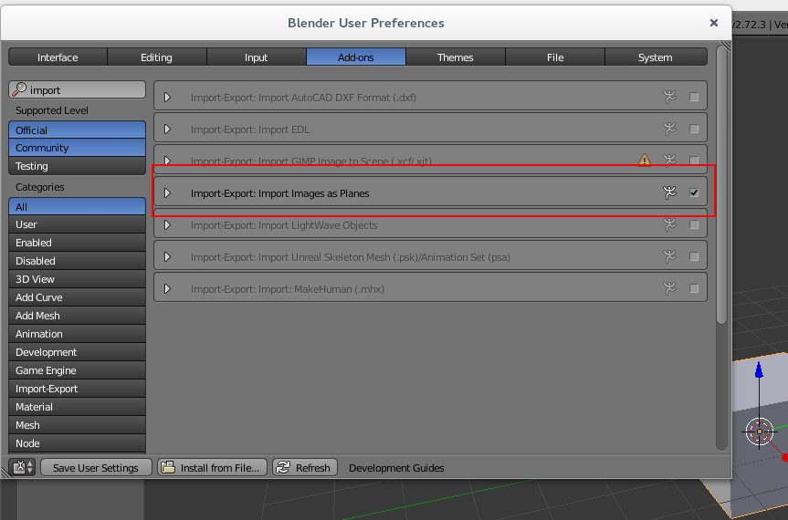2. Importe as imagens.

3. Ative a opção Emission & Transparent para os materiais, selecione as imagens que pretende importar e clique no botão Import Images as Planes.
A opção Emission & Transparent irá permitir que as cores originais sejam utilizadas (a iluminação no Blender não irá afetar as cores, semelhante à opção Shadeless em Blender Internal Render) e a utilização do Alpha Channel (transparência) das imagens. Estas imagens são PNG e têm transparência.
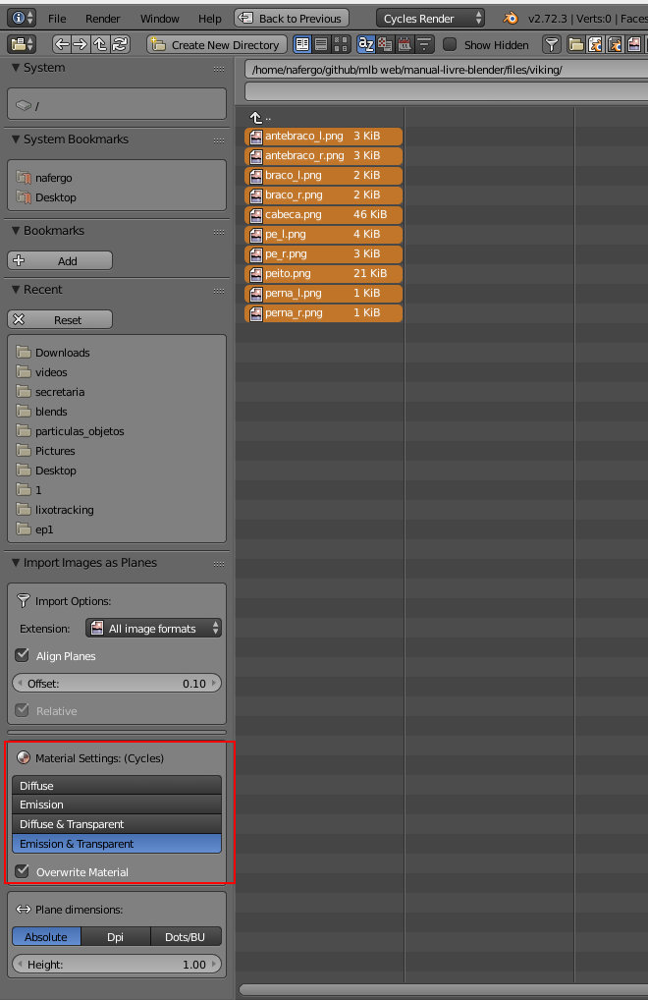4. Dentro do Blender deverão surgir diversos planos. Se alterar o modo de visualização para Material ou Rendered irá ver os materiais aplicados e com transparência.
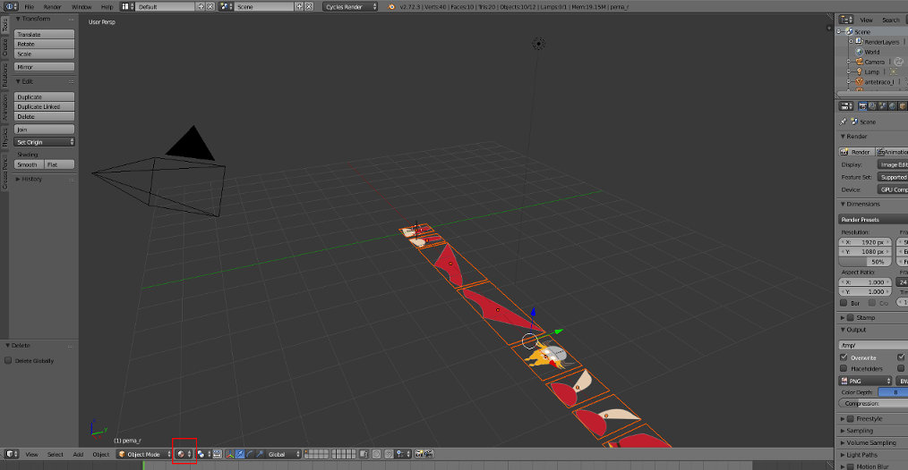5. No exemplo abaixo, estamos a ver de frente e em modo ortogonal. Os planos foram rodados 90º em X para poderem ficar de frente para nós. Esta opção não é obrigatória mas é uma boa prática. Ao manter o Z como altura, podemos depois utilizar a simulação (i.e água, fumo, etc.) sem problemas.
O corpo/tronco do viking foi o primeiro objeto a ser posicionado, nos eixos X e Y está em 0. Os restantes objetos são posicionados de acordo com o tronco. Por exemplo, a cabeça selecionada está também em 0 no X mas encontra-se ligeiramente desalinhada em Y para garantir que fica sempre à frente do tronco. Este desalinhamento é importante para que os planos não estejam exatamente no mesmo local. Uns planos vão ficar muito ligeiramente à frente e outros muito ligeiramente atrás do tronco. Imagine que os planos são feitos de cartão...
Posicione, redimensione e rode os planos a seu gosto tendo em conta o ligeiro desalinhamento no eixo Y. Controle bem os eixos nos movimentos de modo a garantir que os planos apenas ficam ligeiramente desalinhados no eixo Y.
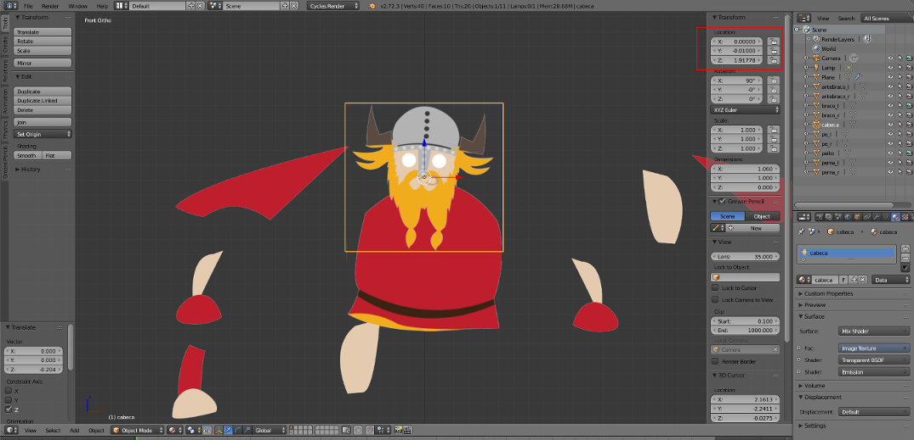6. No final, deverá obter algo similar à imagem abaixo. Repare que o pé selecionado está ligeiramente tapado (está atrás) da coxa. A ordem é uma opção nossa, pode inverter a ordem mas respeite a lógica do ligeiro desalinhamento em Y.
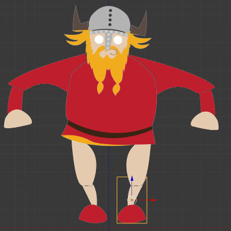7. Selecione cada um dos planos e aplique a rotação e escala (Ctrl + A).
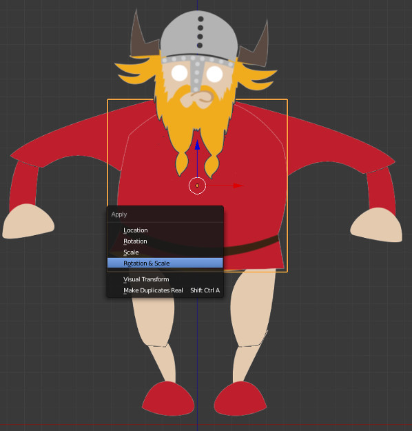A personagem está pronta. Agora iremos criar as condições para fazer animação. Existem dois processos: animar com rotação dos planos e animar com armadura.
Opção 1 - Animar com rotação dos planos
8. Iremos definir em cada plano o ponto de rotação. Imagine que está a definir a junta que une os dois planos. Neste momento, os planos rodam sobre o seu centro geométrico pois é aí que se encontra a sua origem. Iremos alterar o ponto de origem de cada um dos planos tendo em conta o ponto em torno do qual pretendemos que o plano rode.
Selecione um plano e ative o Edit Mode. É extremamente importante estar em modo ortogonal! Selecione os vértices ou vértice que irá utilizar e clique em Shift + S para ativar a ferramenta de Snap e escolha a opção Cursor to Selected. Se escolher um vértice, o cursor irá para a posição do vértice. Se escolher dois vértices, como na imagem abaixo, o cursor irá para o meio dos dois vértices.
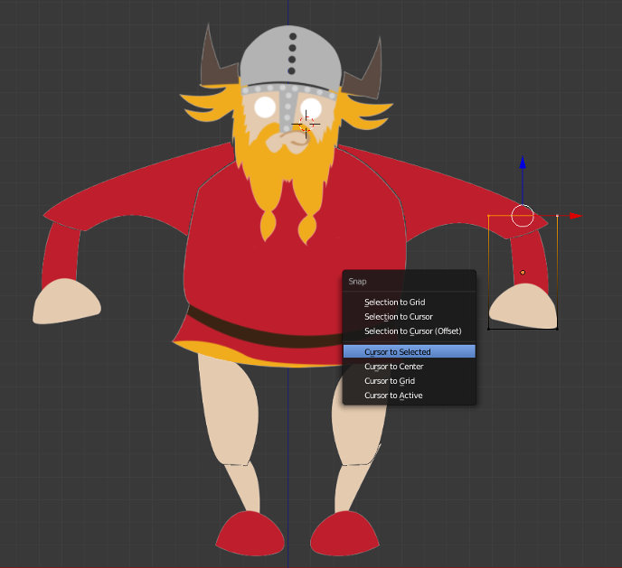9. De seguida, utilize a ferramenta Set Origin com a opção Origin to 3D Cursor para definir a nova origem do plano.
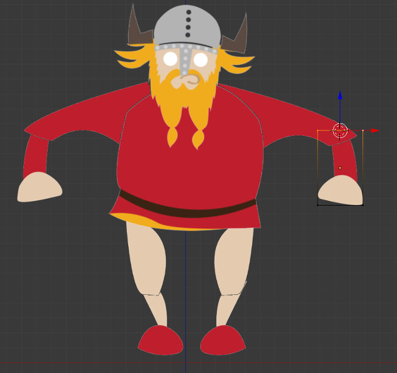 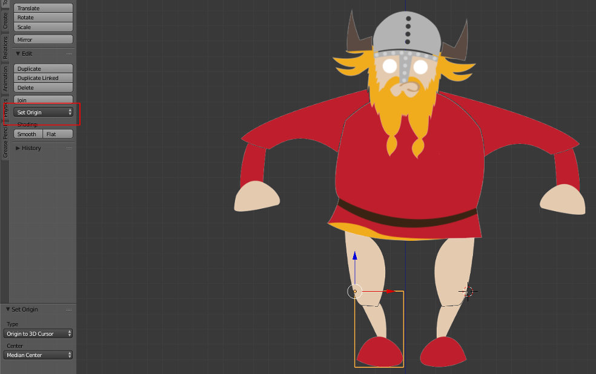Agora, animar é rodar os planos em Y.
Opção 2 - Animar com armadura
8. Iremos criar uma armadura simples para a nossa personagem. Posicione as juntas que unem dois bones nos locais onde os planos irão rodar.
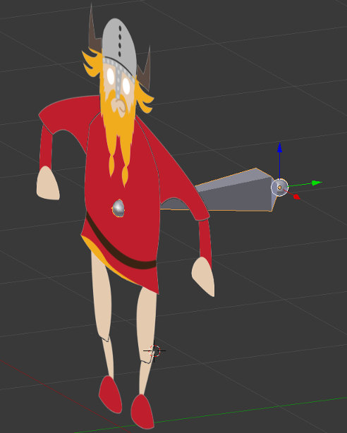 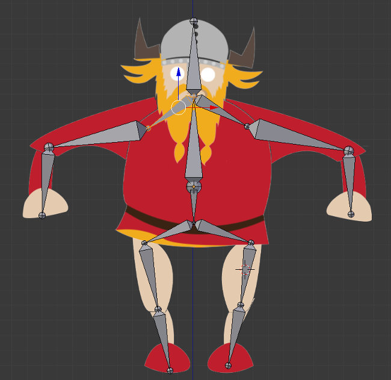9. Compare a armadura da imagem abaixo com a da imagem acima e repare que alguns bones foram eliminados. Na realidade, o mínimo de bones necessário é igual ao número de planos.
Depois de criada a armadura, aparente cada um dos planos à armadura.
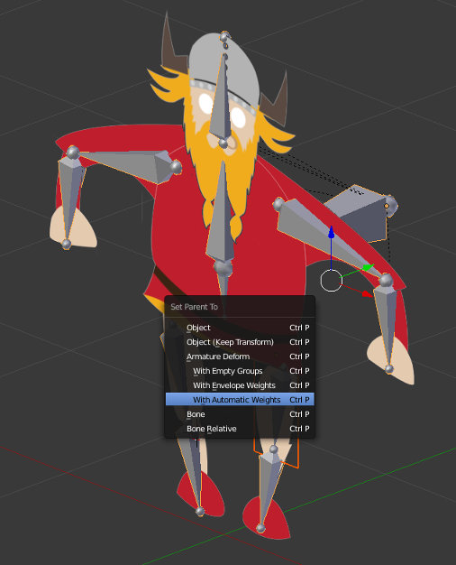10. O passo seguinte é verificar manualmente a associação entre os planos (vertex group) e os bones. Geralmente, cada plano (4 vértices) está associado apenas a um bone e cada bone só controla um plano. No entanto, é possível outro skinning mais complexo ou criativo.
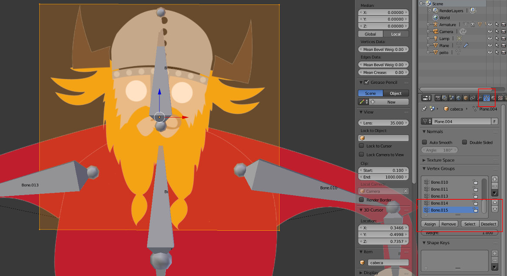11. Agora, pode controlar a personagem através de armadura e utilizar diversas outras funcionalidades (IK, etc.).
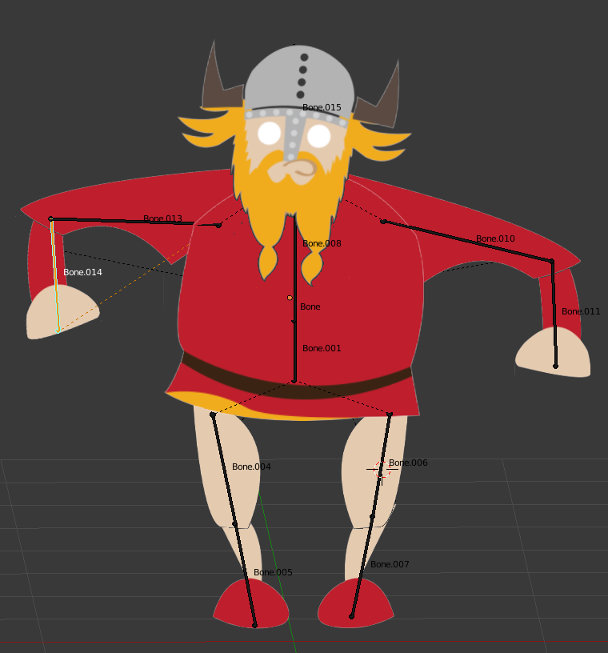Material adicional recomendado
Depois de concluir este texto, sugere-se a leitura do tutorial Rigging Stickman @blenderbasics.com onde se explica uma técnica para criar um rig de humanóide simples.